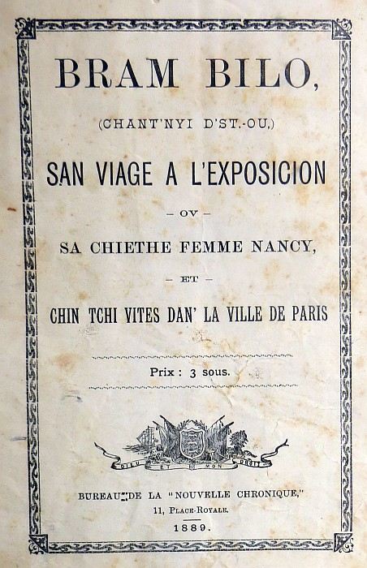

Hotel des Ambassadeurs, Paris.
Chièr Anmin,—Oprès diné, l'aut' jour, j'men fut à m'n'hotel, vais si Nancy en r'gagnai. J'la trouvi oquo dan sa chambre, ou'l avé ses pis dan d'lieau caude, et sa tête enflyubée dan san cotillon d'fliannet, et oul 'tai à mangi chu restan d'pitho qu'j'avais trouvé sus ses g'nors l'aut' sé siez l'présidan Carno.
J'pensi qué j'sethai dommage de resté dans la chambre tout' la séthèe à ren faithe, et j'lis dis si yien' tai drain, que j'ithais feummé eunne cigare et faithe un tou sus l'pavé.
Hélas! mal m'en advint, coumme ou's allez vais:
Me v'la don que j'mé proumène dehors, et qu'j'arrive endrèt un establyissman avec un tas d'gass au d'sus d'la porte. J'demande à un passant tcheche que j'tai q'chute plièche là, et i'm dit que j'tai les "Follies Bergères," et q'nou pouvé y'entré pour un franc.
Et tchez q'nou vé la d'dans, sioupliez," j'lis fis.
"Tout' sorte de choses," s'fit-y, "d'la musique, des jeux, des danses et des hétaïres."
"Tcheque ches qu'des hétaïres, j'dis, èche des bêtes sauvages?"
"Ches des bêtes, s'ou voullez, dit-y, mais pas sauvages. V'nez avec mé, j'vos f'rai vès cha."
J'entrons, et je m'trouvi dans un gran' gardin tout couër de vitre coumme eunne serre, et éscliaithi à la lumiethe électrique. Y'avé partou des flieurs, des arbustes, des mitheurs et des jets-d'ieau, et des p'tits conteurs d'care-et-autre ov des d'moièselles en souée et satin, driethe, à vendre d'la litcheu. A yeun des bus du gardin y'avé un p'tit théâtre ouais tchi tais a joué la comédie, mais je'n pumes pas appréchi car toutes les plièches 'tais prinses, chès-pourtchi j'restimes a nos proumué dans l'gardin parmi les flieurs et l's'arbustes.
Ch'tai plien d'monde, les dames 'tais habillies supèrbeman, coumme pour des neuches yen avé tch'étaient à supé des p'tits verres de vin ou d'litcheu, d'ôtres à pâslé ès messieux ou a s'proumné deux-a-deux. Mais ch'tai pas pour vés des gens qué j'tais v'nu là, et j'dis à man camarade : "Et les hétaïres y'ou qu'y son' don !!" La d'sus i'm dit : "Viyous chute grand' femme là, sus chute tchaise là, oprès du jet-d'ieau, ov un fro ruoge et ses pis jutchis sus les barros d'eunne tchaise a feummé eunne cigarette? Eh ben, qu'i'm dit tout bas dan l'ouethelle, ches là eunne hétaïre."
"Ch'la! mais chest eunne femme chounna! et je'n l'y vé pon rein d'érmerquabile a chute femme là! Si j'avais seu qu'eunne hétaïre ch'tai eunne femme habihie en ruoge a feummé eunne cigarette, j'éthais pon dépensé mes ving' sous pour vais ditet, je'n vé pon rein d'tchuthieux là."
Man compagnon m'ergardi dans l's'yeux et s'met a pouffé d'rithe, et m'dit: Puore bête!!
Quemman! tchès qu'ou dites! Savous ben tchès qué j'sis, quand j'sis siez nous? que j'dis. Mais y m'emni a eunne table, oprès d'y'un d'chès conteurs là, et j'nos assimes.
Y qu'mandi eunne boutelle de champanne et des cigares, et nos v'la a d'visé.
J'pâlimes de Paris, de Jerry, de l'électricité, des railouais et d'la tour Effel, quant v'la tchi s'fit: Pensez-vous que Sir Edward Watkin - je crois que c'est là le nom - réussira à construire son chemin-de-fer sous-aqueux entre Douvres et Calais? " Tcheche qu'ou dites sou-pliéz?" j'mé fis. - Je dis, cher monsieur: je doute que votre anglais réussisse à construire un chemin-de-fer sous-aqueux entre Douvres et Calais. La'd sus je'm lève dret d'but. Ecoutais, moussieu l'Français, fau' pas dithe du niollin si ou voulez qué'j vos éscoute. Sir Edward Watkin n'est pas un marmouset pour poué fèthe passé eun railouais ni d'sus ni d'sous sa coue, et quoique j'sis d'St-Ou, j'sis pas si bête qu'ou pouoraite le craithe! Fos pas ésprouvé à vos fichi d'mé ou savez. Ah! mais!!
Le v'la man Français tchi s'met à rithe oquo eunne fais et tchi dit "Ne te fâche pas, respectable mollusque, mais remplis tan verre."
A chute patholle la je'm laissi raduochi, et pis coumme y'm faisai l'honneu d'm'applé Molusque (ches tchique poste dan l'gouverneman) j'pouvais pas yen voulé, ches tan-tchi jem rassis et j'bumes oquo deux d'gout d'champanne, et, ma fé, je'm sentais un p'tit mie half-an-half.
Quau vint rheuthe dé s'n'allé man moussieu m'dit: Chès mé tchi paie, mais j'ai oubliai ma bourse, prêtez-mé tchique sou, j'ithai vos les porté a vot hotel d'main-o'-matin. J'n'avais qu'eunne bille de chen francs sus mé, et j'lis dounne.
J'm' en vais faithe du change a eunne boutique dans la rue y dit, et y s'n'alli d'hors et je'n l'ai pon r'veu d'pis.
Y'n mé restai qu'très francs, et la d'moieselle du conteux disait qu'yavé yeu pour ven-set francs d'consummations, et, j'en tai pas tout chounna mais tchi fallai payi.
J'eu bieau l'y'éxplyitchi qué j'tai l'autre qu'avé q'mandé la litcheu et tchi s'n'allé r'véné. "Conte la d'sus, gros nigaud," qu'ou s'fait, et ou s'met à faithe du bri, et n'év la eun gen'darme tchim happe au collé et tchim dit tchi fallait allé ov li au violon.
Merci, j'lis dis, j'ai yieu assez d'musique pour asséssé, et il ès tems qu'jalle vais si Nancy s'ennyie. Y'n vouli pon m'escouté et m'emni, pas oué d'la musique coumme j'criais, mais à la station d'police, chès la lus violon ichin.
Pliennyis mé, man pouore Mess Lefeuvre, j'fu enfrummé dan chu violon toute la niét.
Je'n fu que le l'lendemain à onze heuthes que'j pu explyitchi l'affaithe au Juge tchi'm laisse allé.
J'men fu, coumme ben ou pensés, tout d'eunne traite a m'n'hotel, yiou qué fj'trouvi Nancy oquo les pis dans s'n'ieau, à plieuthai et à d'mandé au propriétaithe de l'hotel, tchétai v'nu vès tches qu'ou'l avé, de l'y r'trouvé san Bram.
Ou'm sauti au co quan ou'm vi et m'embrachi coumme ou n'avé pas fait d'pis ben d's'annés, et, oprès que'j y'eu explyitchi m'n'aventuthe, ou'm dit: Bram, m'n'houmme, fos nos en r'allé, vé tu. J'en ai yieu assés d'Paris, et j'veu r'allé vés ma puore mèthe et nos p'tits annimos.
Et ne v'la que j'nos en r'venons oprès-d'main par le baté d'Granville.
San doute, j'n'avons pas tout veu j'cré ben, mais, d'pis ch't'affaithe dé violon, et chu ouédre tchi ma vollai ma bille, j'sis désgoueté, et l'envie m'es v'nu dé r'vais la mathe de St.-Ou et nos véesins, ches-pourtchi dan tchique jours (s'pliait-à-Djieu), ou r'verrais dans vot' office,
Bram Bilo.
Viyiz étout:
{kind=link}